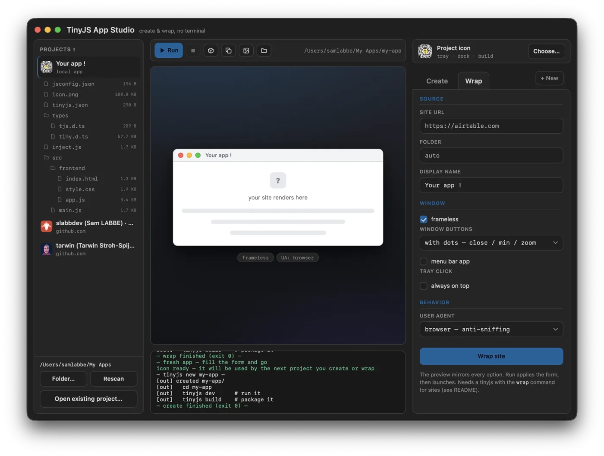
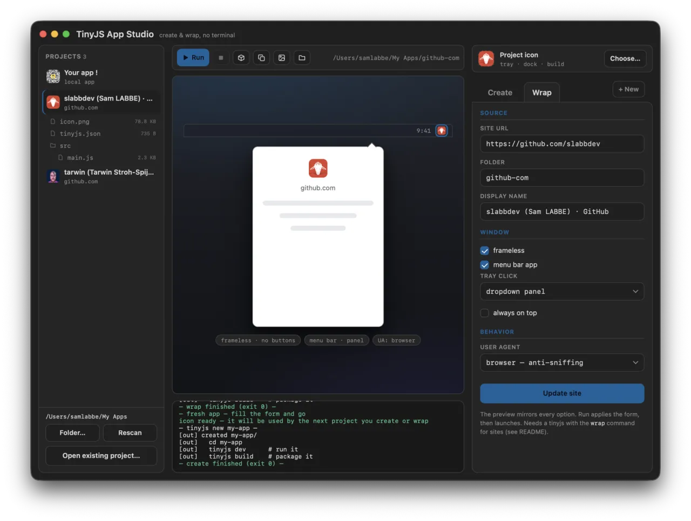
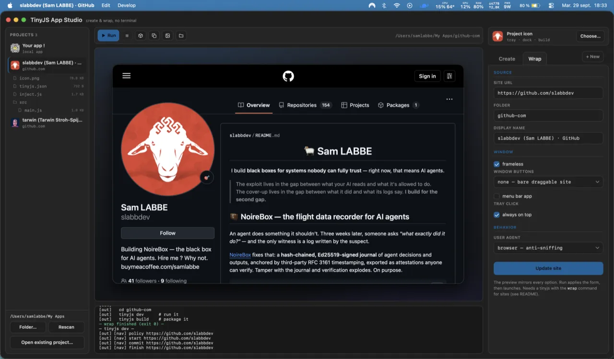
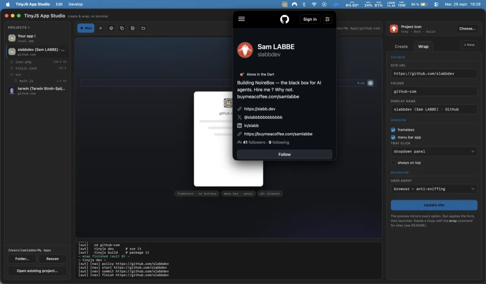
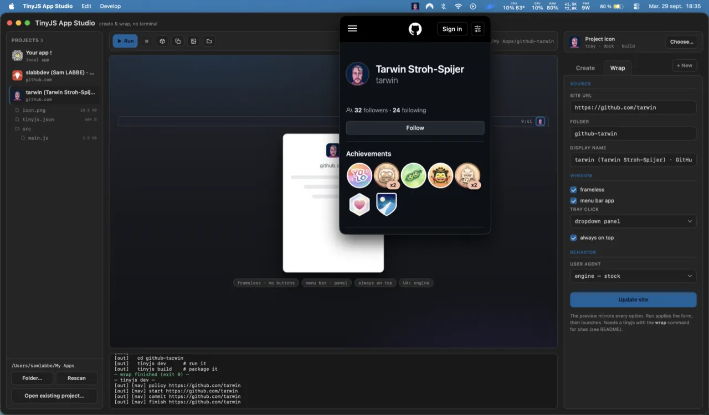
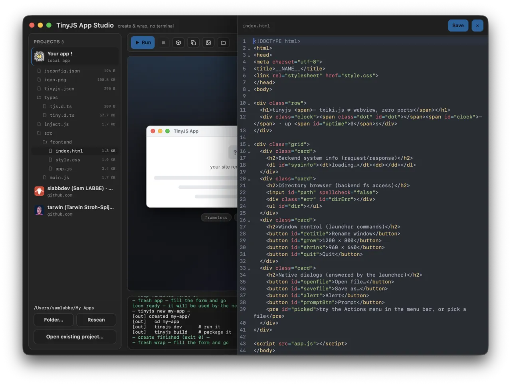
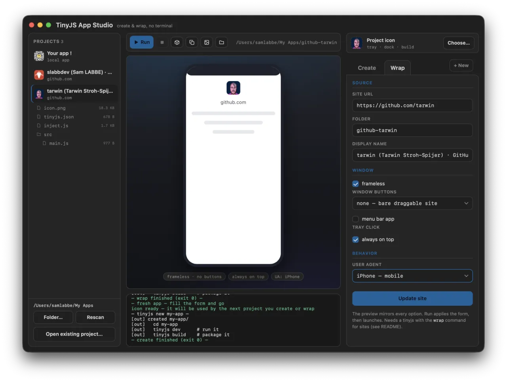
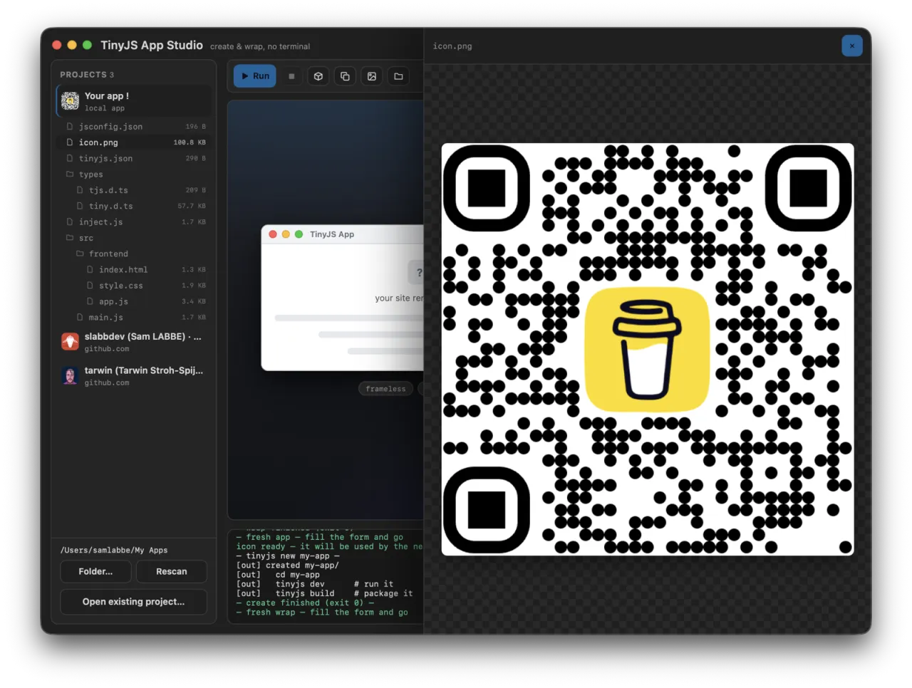

my-app
The from-scratch app
tinyjs new, minus the terminal — zero-dependency vanilla templates, or a Vite setup with React, Vue, Svelte or Solid, TypeScript included.
vanillavitets
⚡ v0.1.0 out now · macOS · Windows & Linux in beta
A tiny desktop companion for tinyjs — create apps from templates or wrap any website into a real ~6 MB desktop app, all from one native window. No terminal. No Electron.

apps, not tabs
Three kinds of tiny desktop apps, one window to make them.
tinyjs new, minus the terminal — zero-dependency vanilla templates, or a Vite setup with React, Vue, Svelte or Solid, TypeScript included.
Paste a URL, hit Wrap site — any website becomes a real desktop app with its own icon, downloads and popup handling.
Lives in the system tray. Click the icon and your site drops down in a panel under it — or opens as an ordinary window. Always on top if you like.
the tour
Real windows, captured live — the same Studio you'll be using.

01 · wrap
Paste a URL and pick your window modes — frameless, buttons, menu bar — the preview mirrors every option live. Hit Wrap site and a ~6 MB desktop app comes out the other end.

02 · real windows
The result is an ordinary desktop window — frameless or not — with whatever chrome you configured. Not a browser tab with delusions of grandeur.

03 · menu bar
Menu-bar mode puts a tray icon in the system menu bar. Click it and your site drops down in a panel anchored under the icon — or opens as a normal window, your call.

04 · one click away
Always-on-top plus dropdown panel means the site is just there — a GitHub profile, a dashboard, a docs page — pinned above everything else you're doing.

05 · the offcanvas
Click a file in a project's tree: code opens in CodeMirror 6 — line numbers, folding, syntax highlighting — edit and save without ever leaving the Studio.

06 · iphone mode
The iPhone user-agent preset also reshapes the preview into a phone frame — check the mobile layout before you commit it to a desktop app.
under the hood
Sidebar, stage, inspector — with the CLI narrating every step.
A projects sidebar with a file tree per project, a live preview stage, a config inspector. Click an image in the tree — it previews right there, generated icons included.

Every line of tinyjs dev and tinyjs build streams into the window as it happens.
Wrapped pages get no access to your machine beyond their own window and dialogs — that line is drawn by tinyjs' per-origin API policy, and the Studio just stays honest about it.
All the project actions — one click each, on the selected project.
Point the Studio at any tinyjs project anywhere on disk — it joins the sidebar with all its actions, and nothing gets moved.
📁 Open existing project…
get it
v0.1.0 ships a signed .app for macOS, plus Windows and Linux builds — beta platforms of tinyjs itself.
$ git clone https://github.com/slabbdev/tinyjsapp-studio
$ cd tinyjsapp-studio
$ tinyjs dev
Zero setup: on first launch the Studio offers to install the tinyjs CLI itself — the official installer, one click, streamed in the console. wrap is brand new: until it lands in a tinyjs release the Wrap tab waits (Create / Run / Build work), and devs can point TINYJS_BIN at a checkout.